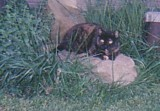

Mommy is a bitch.
Was Saturday a beautiful spring day after what seems like weeks of rain? Was there all sorts of excitment this weekend? The answer to both of these questions is yes. Did mommy take me outside...HELL NO.
Mommy stayed home Friday, she and her mommy decided to take a shopping trip. But before that mommy slept in which was cool with me until around 9:30 when someone knocked on the door. Seems mommy's mommy was having 13 tons of new gravel delivered (wasn't to have arrived until 10A.M.) so mommy had to pay for the stuff then tell the guy how to dump it. Mommy wasn't thrilled and said do whatever the best you can. Thankfully mommy's mommy arrived home in time to give better directions but still the truck was way too big for the driveway and some of the pines and the one maple are now missing some branches. At least everything outside smelled great and piney. Anyway, mommy's daddy stayed home to spread the gravel while mommy and her mommy went shopping and to lunch. Never fear, they brought mommy's daddy lunch then mommy's mommy helped some with the gravel spreading. It wasn't a nice day out so I was not too upset by mommy leaving with Mike for the evening even though I had not got to go outside. Outside was kinda busy and noisy anyway. Seems the Civil War Encampment was next door in the park and all sorts of people pretending to be Union soldiers signing up for the Civil war were over there. The family enjoyed it but I personally found it silly. Now for the bad part.
Saturday the sky cleared and the temperatures warmed up. There was lots of LOUD noise from the park. Seems they like shooting muskets lots and then there was the cannon fire from 3 cannons. Still, a trip outdoors would have been wonderful especially since Mommy's mommy was planning a cookout which mean cooking and cleaning and yelling at animals that happen to get underfoot. Not me, heaven's no, just those idiotic, lame-brain, butt-smelling, elongated demon dogs. They got yelled at frequently and I really take delight in Psycho Sam's un-natural fear of the sweeper. That dog just about dies, he hides as far away as he can get but since mommy's mommy can be quite diligent when cleaning there is just no safe place for that freak dog to hide. Mommy wasn't home or she would hold him and baby him, the creep, but mommy wasn't there so ha, ha, ha! Anyway, mommy came home with Mike and where did they go, outside to help mommy's daddy. Where was I, still in the house. Duh, hey, I am Ratty of the Wild, I need to explore and pretend to be Wild Kitty. Needless to say, people came, people went to the park, good food was served and I was stuck in the house. Revenge will be mine, Sayeth Ratty of the Wild.
Gotta go, mommy caught me blogging and she wants to get ready for work. She seems like she would like me to leave so she can have her room and her pc.
More another evening.
My Life Is Hell

|
|
Monday, April 26, 2004
posted at 8:48 PMThursday, April 15, 2004
posted at 8:37 PMThis is not Rattycatt, Ruler of the Universe tonight. Tonight I am Ratty of the Wild. Spring is slowly coming to Ohio and mommy has taken me outdoors. In the past I have been somewhat timid, after all, I am a true housecat, born in a house, live in a house, never go outside the house unless escorted by the ever watchful mommy since the outside is full of bugs and grass, trees and the lesser cats, the garage cats. I think however I have heard the call of the wild in my more mature years, perhaps after this miserably long winter I am more willing to listen to the birdsongs and spring peepers, to search for bunnies and yes, even to go nose to nose with the lesser ones. Tonight I spent the longest time ever outside. I ventured off the deck, a haven of safety, into the wild lawn (the muddy, swampy lawn). I explored alone as mommy had her ass parked on a chair reading a book, paying me no attention. Bravely I walked past the first pine tree and sat behind it, hidden from mommy's view (okay like the bad mommy she is she was engrossed in her Dean Koontz book) where I smelled the pine and the grass (lawn grass not the stuff mommy's mommy and Beth the Brutal talk about after Ozzfest!) and swatted the stray bug. Then the wanderlust hit and I strayed even further from all my safe havens, I was more than 1/2 way to the barn! The barn which is surrounded by deer tracks and dog poop (joy joy), where the parties take place, where there are strange things like lawn tractors and tools and a big burn ring for bonfires and hot dog roasts. Yes, I spent probably 45 minutes just wandering, exploring, broading my horizons, while reducing the size of my fat ass (exercise really isn't as bad a mommy's mommy leads me to believe). Alas, mommy realized I was gone and came searching for me. I managed to elude her and run helter skelter across the muddy terrain, jumping over the turdlings left by those shitty mutant dogs, until she finally caught me. I put up a fight, I do have back claws and I can growl and poof, but still, her large size overcame my smaller form and I was put back on the deck. Spent some time there looking disgusted at the groveling, butt- smelling creatures, went nose to nose with Lil' Fluff (what a sissy/stupid name and just because she has a big poofy tail and looks like she could be part Maine Coon Cat why does everyone like that outside, redneck, barn-trash cat so much?) and explored the herbs coming up in pots on the deck (cooking herbs idiots, not sweet leaf smoking herbs!). However, mommy being kinda a cold blooded creature decided enough time had been spent outside and she drug me inside. One high point, once I was in I made it clear that I needed canned food, it really did not matter to me that mommy gave me some KFC chicken earlier. Ahhhhhhh yes, spring in the rural countryside of Ohio brings out the stupid asses. The farmers are selling off their frontage because heck, they can get big bucks for a couple acres of land that cannot be farmed because it is too wet or hilly and people are pretty damned stupid when it comes to buying land for houses. Then these assholes build a house on their two acres right next to another stupid ass with two acres, next to another moron and pretty soon there are 10 houses right together and these dumbshits think they live out. Even better is the totally brain dead asshole with his two acres that set up what he thinks is a target and shoots guns. Lots of guns everytime it is nice. Now I am just a cat but I am obviously smarter than this shit for brains person. A bullet can easily travel for a miile or more if you miss a target and trust me, I am sure these people have been known to miss. Anyway, that bullet goes off there property and hopefully hits nothing more than the ground or a squirrel or tree. Mommy's mommy feels like buying an howitzer and pointing it toward there house and firing off a couple rounds because her opinion is that there should be peace and quiet out of town, not the lovely sound of gunfire. That is why there are firing ranges. Let's talk about another fun part of spring that will be around until about then end of July. Ticks and mosquitoes. I have no idea why these creatures were created. In my opinion they serve no useful purpose. Mosquitoes are the most plentiful (not quite yet but with this rain and warmer weather it will not be long) and most annoying and have nasty itchy bites and even spread West Nile virus but ticks are the grossest things. Those blood suckers bite you and dig in and then feed on your blood. These vampires of the bug world bloat up and hang on like a hemmorriod. So far so good, no one has had one except the neighbor lady but again, I know they will be here soon with the warm weather. I guess the Civil War will be here next weekend on the 24th and 25th. These people dress up like Northern Civil War soldiers and camp in the park next door. Everytime they have a musket drill or fire off those big cannons the idiot dogs go crazy. The morons stand on our side and bark like crazy. Wish those soldiers were hungry enough to be really realistic and have a dog dinner one night. I watched the Patriot with Mel Gibson and in that movie they said "dog was a fine meal". Well there are three living in this house that are nice and plump and would roast well over an open fire. Heck, I bet I could even through in some Cajun seasoning from mommy's New Orleans trip. Suppose I should stop writing for the time being. Mommy wants to go to bed or talk to her boyfriend Mike and she likes privacy. Whisper whisper, wonder what they talk about. I know she tells him she loves him teeheeeeee Anyway, goodnight from Ratty of the Wild! |

A ratty cat's tales of her life with three wieners (dachshunds, you pervert!)
About the Blog: Personal Info:
-Name: Splotches, AKA Ratty-Age: 9 -Sun Sign: Leo -Location: Baltimore, Ohio -E-mail Me Archives:
07/01/2003 - 07/31/2003 08/01/2003 - 08/31/2003 09/01/2003 - 09/30/2003 10/01/2003 - 10/31/2003 11/01/2003 - 11/30/2003 12/01/2003 - 12/31/2003 01/01/2004 - 01/31/2004 03/01/2004 - 03/31/2004 04/01/2004 - 04/30/2004 05/01/2004 - 05/31/2004 06/01/2004 - 06/30/2004 Credits: |